How a unit is made
2026-11-17 · tony25931
Today's Dev Diary is about UNIT MAKING and is written by a few of us involved in that process @Mausolos of Mylasa (our lead historian), Myself, @Grimbold (3D artist) and @HoneyBadgerViking (historian and unit description writer). It represents the work of a whole team of historians, artists and other people involved in the process.
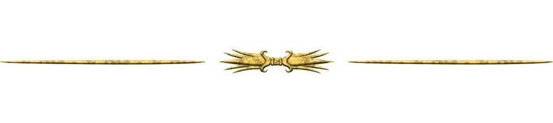
HISTORICAL RESEARCH Over to @Mausolos of Mylasa :
Salvete commilitones, chairete philoi, welcome to this dev diary, everyone!
Today, we are going to speak about the process of unit making in RIS. Our wonderful units are one of the core features of the mod and we are immensely proud of every single finished unit, with all the stunning details, the great variety we are able to implement and the historical research behind it. Since this is such a gargantuan effort, this dev diary is written by the many people who are usually involved in the making of every single unit. I will start us off since I am the head of the history department and I was the first person to start researching rosters for a RTR mod under the guidance of Ahowl all the way back in 2013 (!). With the arrival of the RTW remaster, many things changed and a lot of our lofty dreams could finally become reality. Many people have since joined the team and done amazing work on this front. In the history department itself, many others have devoted much time and energy to the research of units, and for the current update @jottel deserves the highest praise for taking on the job of leading the Italic and Roman research. But I will let him and all the artists, unit makers, stat guys and so on chime in below. So what is the first step towards constructing a unit roster and researching a peculiar unit? The answer is: it really depends on the faction. Some factions will offer us an absolute wealth of information that has to be ordered and divided into meaningful unit concepts - this was the case for the Ptolemies or for the Romans, for instance. Many factions, however, will have a dearth of sources for their military and we are thus sometimes clutching at straws. Yet other factions have a perfect balance and I want to give you some examples for all three cases in the following section.
First off, let's take a look at the Ptolemies. In ancient Egypt, both official texts and private communication was written on papyri. In the dry heat of the country, papyri survived extraordinarily well, even after millennia, and we thus possess lists of actual regiments, reports of military campaigns, letters of individual soldiers and sometimes even drawings of warriors. To this one can add the ancient historians, who were quite interested in the Ptolemaic army - much more than that of, say, any Thracian state. Therefore, the main challenge here was finding the correct equipment for some units like the Ptolemaic Peltasts, or the Therapeia Infantry, and deciding which regiments not to add. For example, sources also speak of "Persian" regiments, but most researchers seem to agree they did not fight with Persian equipment, so that seemed a bit redundant to us. In other cases, we simply had to pick the right colours or add equipment not depicted in the visual evidence. Below, you will see two stelae from the Graeco-Roman Museum of Alexandria from around 200 BC that depict Ptolemaic cavalrymen and directly inspired our units. Thankfully, archaeologists had published on the remains of colours on these and we could therefore add them accordingly.
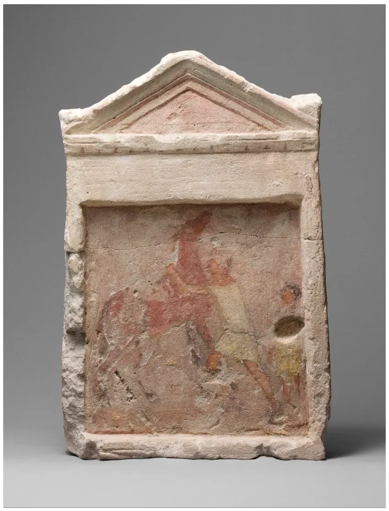
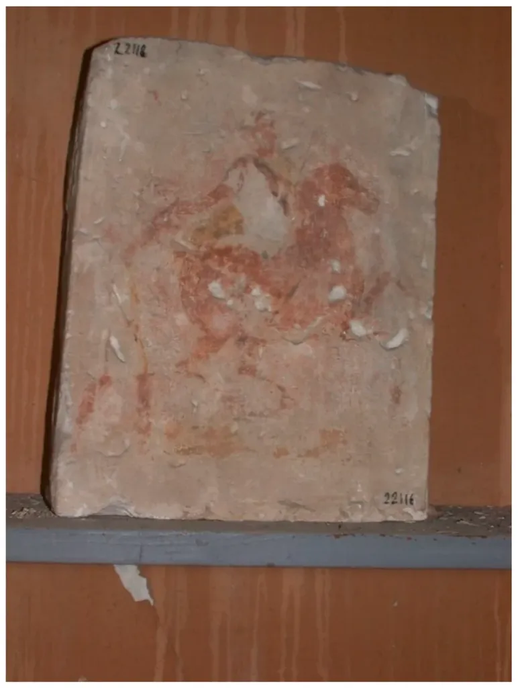
Secondly, we can have a look at Red Zed's favourite faction, Paphlagonia. Here, our evidence was much more limited. There are no paintings, no coins depicting soldiers, and the only inscription mentioning Paphlagonian soldiers is from the Bosporan Kingdom (KBN 180 = IOSPE II, 296)- accordingly, they have special access to Paphlagonians as mercenaries. Therefore, we were left with basically nothing but a few quotes from Xenophon, the Greek mercenary captain and military author, who was part of the Anabasis, the march of ten thousand Greek mercenaries in the Persian civil war of 401 BC. As such, he encountered Paphlagonians several times:
*"But the moment they began to retire, there rushed out upon them from within a great crowd of men armed with wicker shields, spears, greaves, and Paphlagonian helmets, while others set about climbing to the tops of the houses that were on either side of the road leading up to the citadel."* (Xen. An. 5.2.22)
*"Secondly, I know that they [Paphlagonians] have plains and a cavalry which the barbarians themselves regard as superior to the whole of the King's cavalry."* (Xen. An. 5.6.8)
This is better than nothing, for sure, and at least gave us some info on equipment and on the qualities of Paphlagonian light cavalry. And, behold, Herodotus actually says something about them as well:
*"The Paphlagonians served with plaited helmets upon their heads, small shields, and spears of no great size, and also javelins and daggers; and about their feet native boots reaching up to the middle of the shin." *(Hdt. 7.72.1)
The information on the helmets was valuable, but we had a lot of discussion about what exactly a "plaited helmet" could be. The rest was a lot of conjecture and frustration, and therefore, the Paphlagonian roster is not exactly the strongest in the game. But look at that wonderful landscape! Loads of places for the Paphlagonians to hide in.
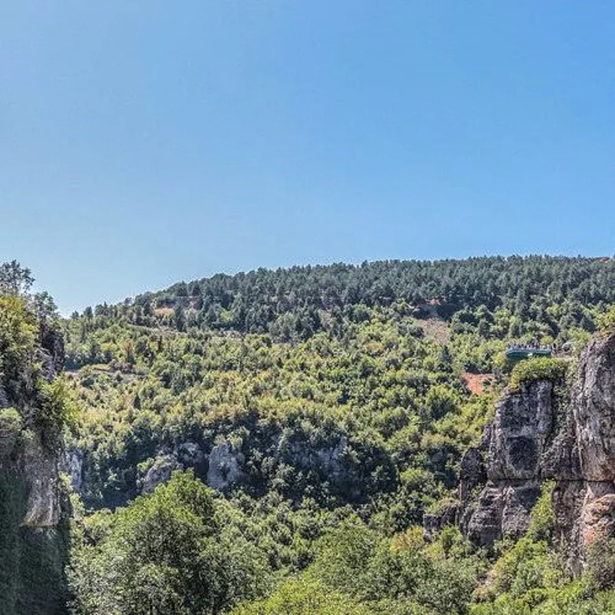
Thirdly, some factions did the job perfectly. Here, we are looking at a league of Greek cities whose pronounciation has cost many nerves and caused many debates. In 210 BC, the magistrates of Thespiai recorded all soldiers they contributed to the federal army of the Boiotian League for two consecutive years (IThesp 84). It mentions Thespians who joined the agema (the elite guard unit), the peltophorai (phalangites), the epilektoi ("chosen ones", like the Antigonid royal peltasts), pharetritai (archers) and sphendonetai (slingers). At this point, the phalangites had apparently replaced the hoplites which are mentioned in most earlier inscriptions from Thespiai (IThesp 88; 89; 90). Yet more inscriptions talk of soldiers being trained as thureophoroi (IThesp 91; IThesp 93). The latter two seem to be almost indistinguishable, and that is why our Boiotian Thureophoroi are hoplites with thureos shields (Post, R., The Military Policy of the Hellenistic Boiotian League (2012), p. 91).
Therefore, the epigraphic evidence (inscriptions) from one city, Thespiai, alone, already provides us with almost the whole Boiotian roster. They say little about the equipment, but in the Greek world this is unproblematic, since there are ample publications on the topic who have already interpreted the terms, and parallels to enough other Hellenistic armies which fought in similar ways. With this, I have talked enough, and Tone will now say something about 3D Modelling and Texturing next.
3D MODELLING AND TEXTURING
With all of this information at hand, it’s now time to start making the units. We’ll generally start off with creating a unit spreadsheet for each of the 7 model variants, detailing equipment, weapons, armour, clothing, shield emblems, etc.
We’ve shared quite a bit in a previous Developer Diary about the unit creation process https://discord.com/channels/714205632663912498/894286297802362931/949534278071517195 We explained about the processes: • finding source materials (helped by our historian team) • planning texture layout • creating and modelling a low poly mesh • putting details into a high poly mesh • texturing, including the PBR texturing process • baking
Time has moved on and so have our methods. I’ll mostly cover parts of the process which haven't been covered previously or which have changed since a few years ago. I’ll illustrate this with one of the helmets we’ve recently created, a Roman boiotian helmet used by some of the late republican bodyguard cavalry. @jottel (our Roman historian) was keen that the bodyguard cavalry should have at least some of the variants equipped with this helmet.
We start with the reference images:
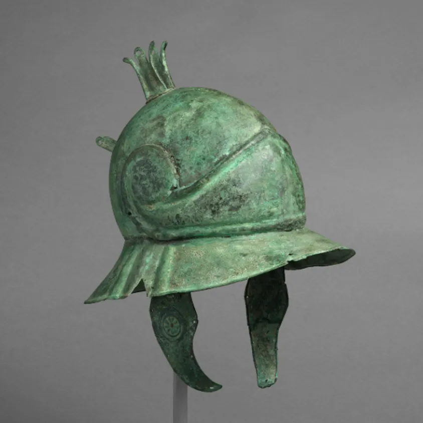
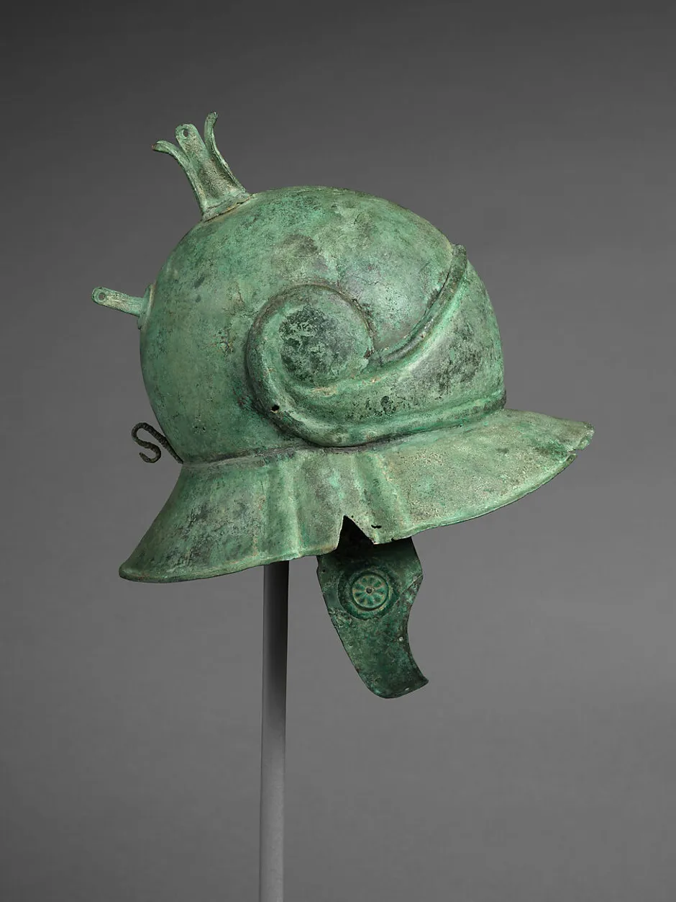
Retopology Retopology is the process of manually drawing a clean, low-polygon 3D mesh directly on top of a high-resolution model. There are a few ways of doing this, but I’m using Polyquilt (a free, community-maintained add-on for Blender). It allows you to paint, extrude and snap quads straight onto the surface of a model. A personal thanks here to @El Santo Padre who's been a fantastic tutor in getting to grips with more advanced Blender functionality.
To create the helmet, I’ve started with a cube and converted to a sphere (the normal start for making a helmet)
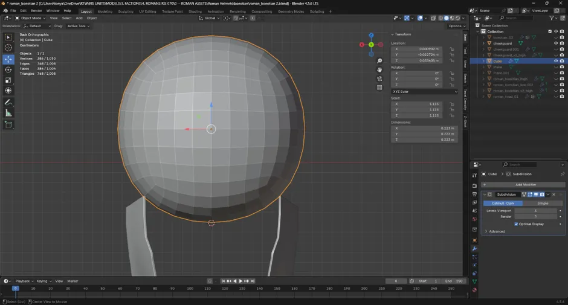
After creating the basic shape, I then used the Polyquilt tool to add the mesh for the raised ridges and scrolls above the brim of the helmet. Polyquilt snaps the newly created quads to the surface of the existing helmet shape. I then cut the helmet around the outside of the new mesh, delete the section overlapped by the new mesh and join the new mesh onto the helmet.
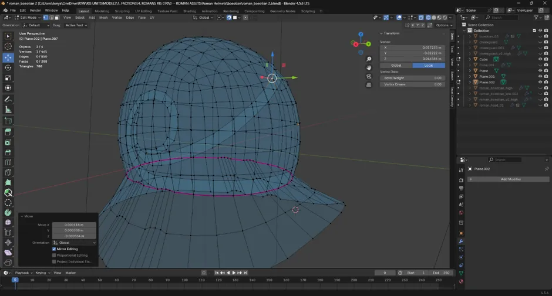
After adding a ridge to new mesh parts as well as some additional details like a raised edge on the brim of the helmet and cheekguards, we end up with a low poly mesh (1430 vertices) looking like this:
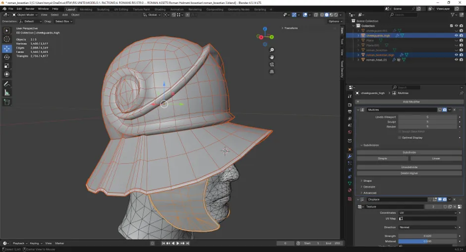
High Poly Baking of Normals We referenced this previously, but we’re increasingly using this approach on most of our 3D assets. Here’s why:
High-poly normal baking is the process of projecting surface lighting and geometry details from a high-resolution 3D model (millions of polygons) onto a flat 2D image texture—called a normal map—and applying that texture to a simplified, low-resolution 3D model (thousands or hundreds of polygons). Instead of moving actual vertices or faces, the normal map uses the RGB colour channels (red, green, and blue) to trick light into bending as if the surface had tiny bumps, scratches, bevels, and wrinkles.
In real-time environments like Rome Remastered, your computer has to draw frames 30 to 120+ times per second. • The High-Poly Problem: A sculpt with 2 million triangles looks amazing, but trying to animate or render thousands of them at once will crash frame rates. • The Low-Poly Solution: You build a clean, lightweight version of the mesh designed for fast rendering. • The Bridge (Baking): You bake the intricate surface details of the heavy sculpt into a texture file so the lightweight model inherits all the visual fidelity without the heavy geometry cost.
I’ve used the Multires modifier in Blender to create the high poly mesh (about 1.5 million vertices) from my low poly mesh (1430 vertices):
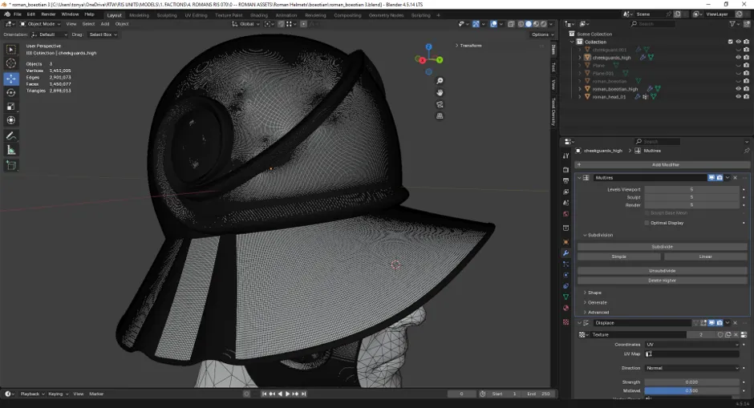
Both the low poly and the high poly models are exported from Blender as .fbx files (an interchange format allowing transfer of the 3D models into other software, in this case Substance Painter, an industry-standard 3D texturing software used in game development, film and product design.
Substance Painter allows the artist to paint realistic textures and surface details onto 3D models in real time and provides a quick and highly effective capability for transferring data from the high poly model into the 2D normal map (a process known as baking). As a result the low poly model inherits the smooth curves and other detail from the high poly model.
Here’s the imported low poly mesh – you can see the clear sharp angles on the scrolls on the sides of the helmet:
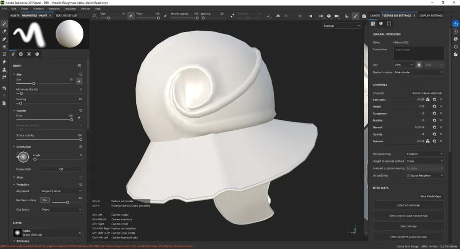
So now onto the actual baking process in Substance Painter. A cage (an expanded version of the low poly model) casts invisible rays onto the high poly model and measures angles, depth and proximity and converts that information into a 2D normal map (encoding that information into RGB pixel values). You can see the outline of the cage sitting above the surface of the model here.
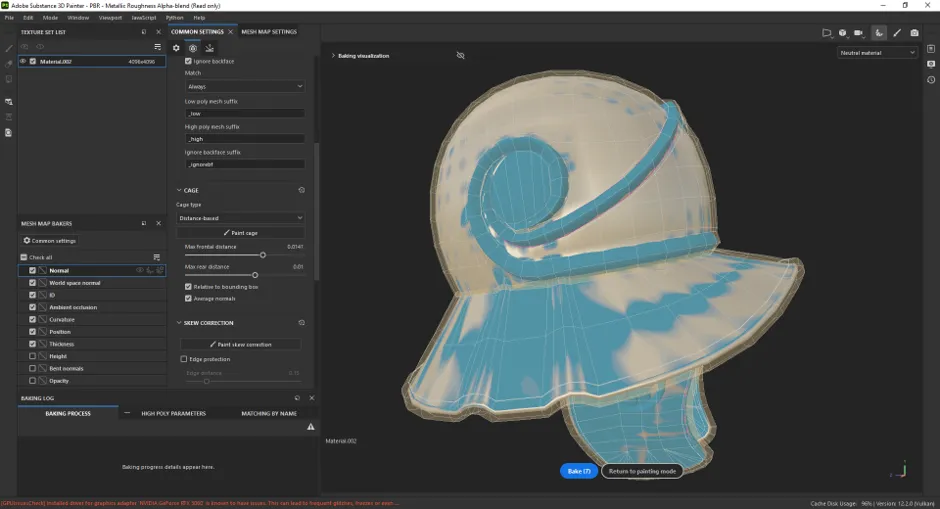
After baking, the normal texture then tricks your eye into seeing those angular lines as smooth curves, as well as allowing us to add in details such as the raised decoration on the cheekguards.
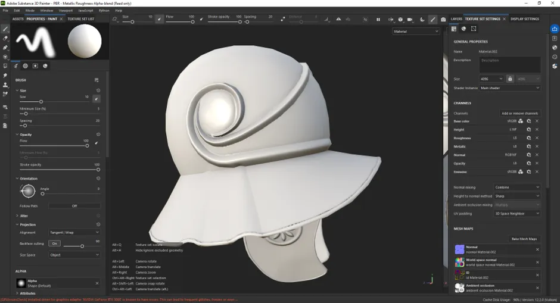
Here’s how the normal map looks for this helmet after the baking process (3D and 2D views)
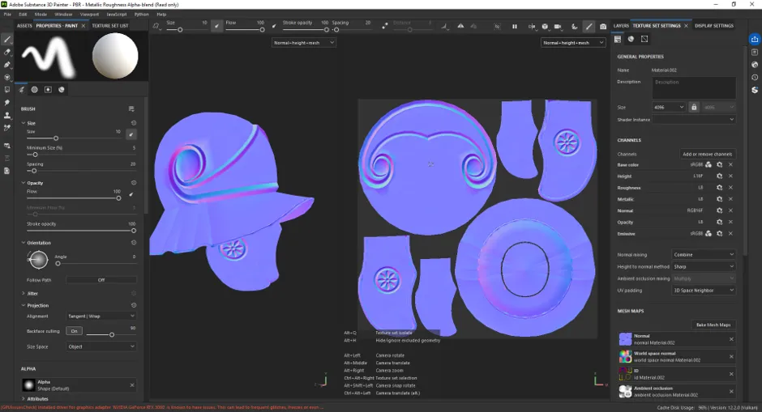
Texturing Using Substance Painter Instead of just applying flat colours, users paint with Smart Materials that automatically react to a model's geometry. For example, the software can dynamically generate edge wear, rust, or dirt in crevices based on the object's shape and the baked normal map details.
The end result is a helmet with realistic-looking materials as well as dirt, wear and tear and damage such as scratches. You’ll notice that there is an accumulation of dirt in the recesses such as scratches, around the rim, around the edges of the raised scrolls and the cheekguard decoration.
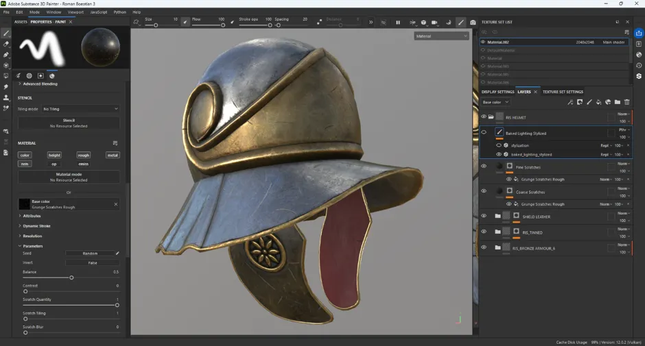
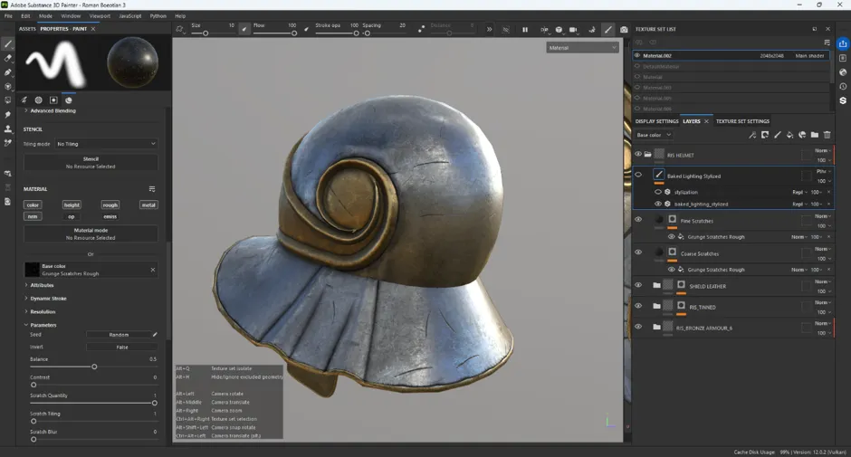
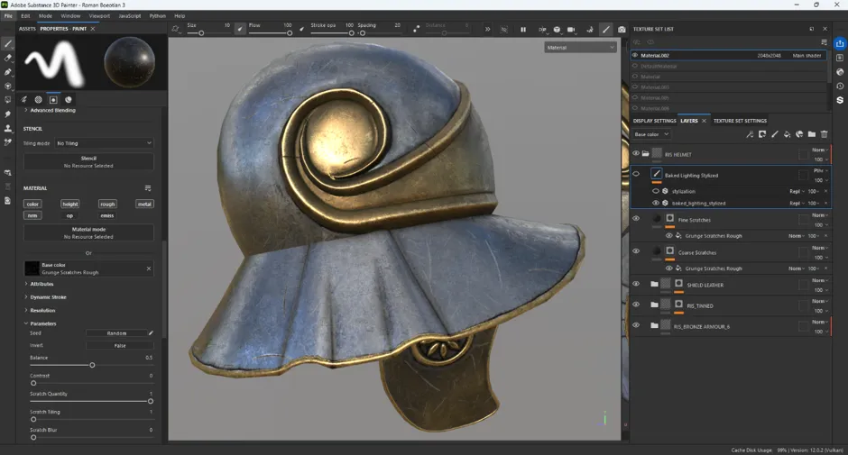
I’m now using Substance Painter for most of the texturing in RIS – some other examples (a late republican scutum and a set of phalerae) shown below. Benefits include being able to get paint effects, scratches, dirt and wear into the texture easily, speeding up the unit creation process and providing better, more realistic results.
So that wraps up the unit creation section. @Grimbold will now cover the process of creating LODs (levels of detail).
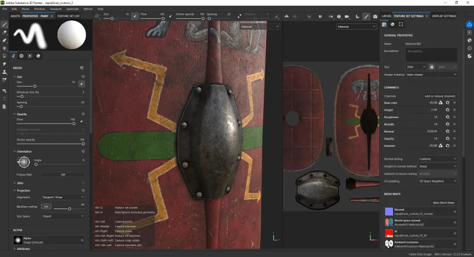
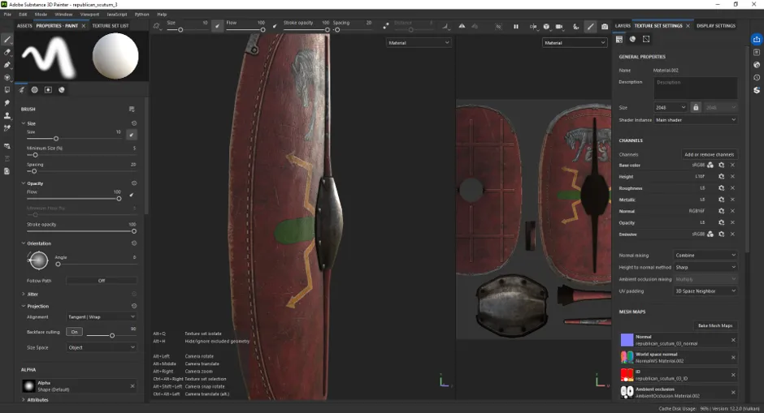
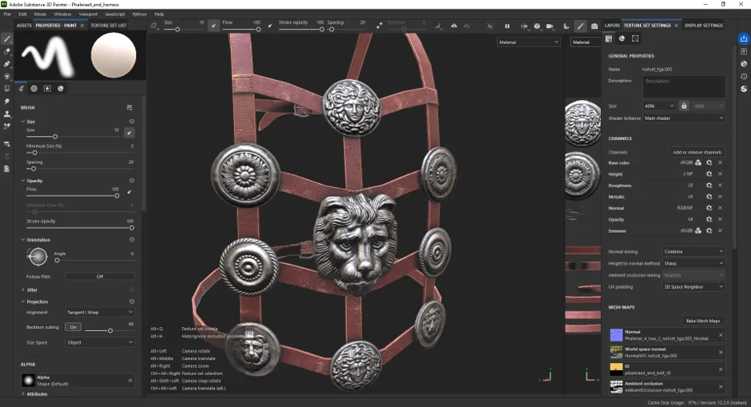
LOD CREATION
What’s up folks? I have the immense pleasure of explaining to you today the fascinating topic of LODs (Levels of Detail) and how we here at RIS go about making them. “LODs? Why?” I know, I asked the same question. Nonetheless, let’s get this moving.
Introduction “LODs? What in the world are those?”
Why, I’m glad you asked! LODs are basically different versions of the same 3D model – like our lovely soldiers – and each of these versions have fewer and fewer polygons. Why do we need that? Call it a trick to save up on performance. In case of Total War, it’s pretty simple: picture yourself in the battle map; the farther away you are from said 3D models, the lower the polycount will be. Conversely, if you’re really zoomed in, salivating over how “good” your filthy, puny roman soldiers look, then the version with the highest polycount will be displayed. So, LODs allow games like RTW to render massive armies efficiently while maintaining visual quality up close.
RIS and LODs For a long time, Exi had the (dis)pleasure of making LODs for our lovely mod and he’s entirely responsible for coming up with the workflow we use in RIS. Then, that delightful honour passed on to yours truly.
LOD1 First, let’s make sure we have scene statistics to keep an eye on the stats. The unit I’m using for this demo – a Hellenic slinger – comes in at a little over 5000 vertices or 10.000 tris. The goal is to have those values dramatically reduced by the end of this process. We also keep Face Orientation on just to ensure everything is facing the right way. Generally, in 3D, inverted normals is a big no-no. We have a look around to see all is in good order. Then we open the hierarchy and hide the armature. Why? Our dear Exi has prepared a script that, with one click, ensures that all UV maps have the same name. This script only works when the armature is hidden. Why? No more questions.
Afterwards, we select all individual models, hop on over to edit mode and Merge by Distance, to guarantee the best results when begin decimating.
LOD1 typically doesn’t include any weapons or shields, so we should box select everything but those and slap on a decimate modifier at a value of 0.250, which removes around 80% of geometry on the body. Alright, LOD1 is ready, send it!
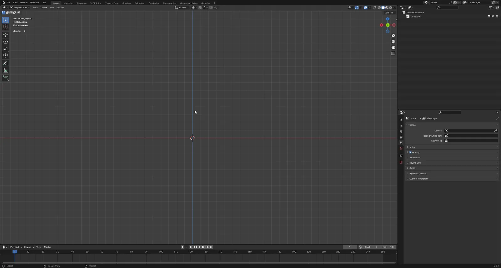
LOD2 We CTRL+Z (Undo) to go back a step, to reduce it further, by going down to a value of 0.150. Anything that isn’t included in the main body, like weapons, shields, cloaks, receives its first reduction now. In this case, the weapons go down by 0.250. Ship it, send it!
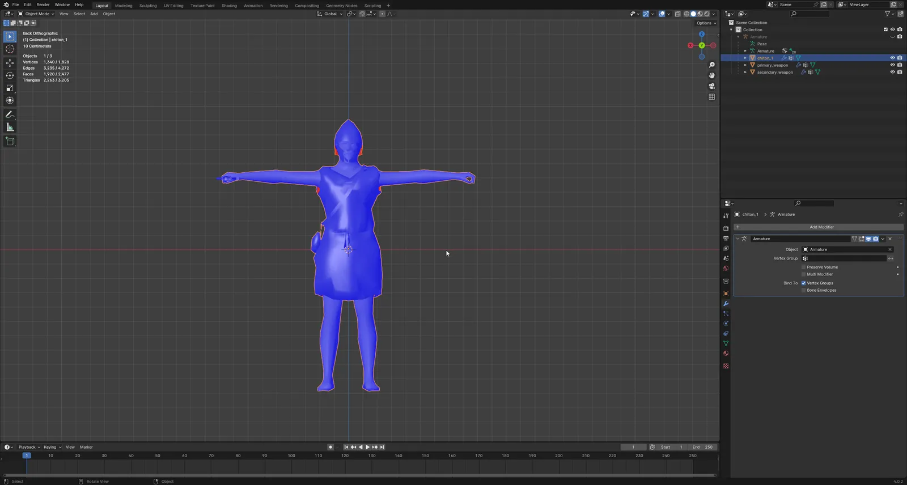
LOD3 This is the most dramatic reduction, and to do it, we must return the scene to the beginning, to the point just after we merged all vertices. In a way, it’s the stage where we have a bit more freedom in our reductions. In this case, I delete the head model that came with the unit and replace it with a pre-prepared low-poly version, because the head contains lots of details (hair, teeth) we don’t need for this part.
You will also see me delete the straps of the armor pouch, which is common. For instance, we often delete the strap used to grip a shield.
Normally, we join all the body parts together for the reduction, but I’ve also found that in some cases, reducing certain parts individually – like the belt or helmet – produces better results, which is what you see me doing here.
I then join the remaining body parts and reduce them together. All these parts tend to be reduced within a range of 0.075 to 0.150, depending on the results.
Finally, I reduce the weapons. You see me tinker with the values, because we generally want to decimate these models while keeping some idea of the shape while avoiding any major artifacts.
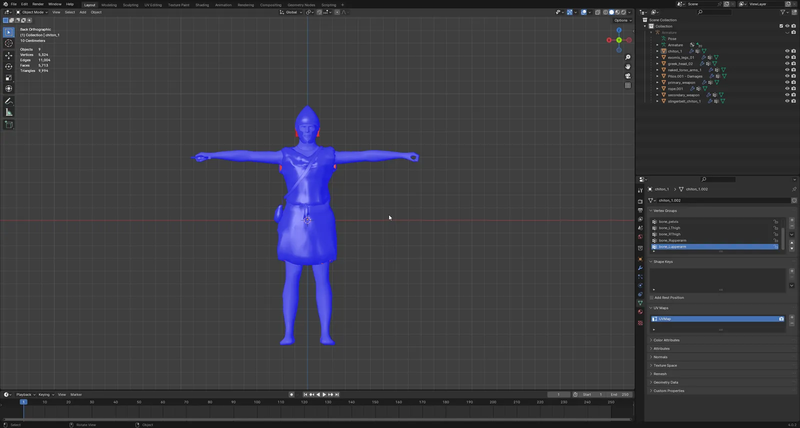
Closing remarks And that concludes our little note on LODs. It’s not a glamorous process, quite repetitive and monotonous, but it must be done. Ironically, I find it to be a good way to unwind at times, which I guess makes the other devs happy!
Now onto @HoneyBadgerViking who will explain the unit description process.
UNIT DESCRIPTIONS
Let’s talk about what goes into a unit description. To me, unit descriptions are one of the most interesting parts of a mod or game, you can often learn so much about whatever setting you are playing and some of the thought processes behind the design too. Often when playing Total War mods on Rome and Medieval 2, the first thing I did was right click units to see what was written about them. I was a big fan of the AOE2 encyclopaedia and reading the Cossacks game manual too as they gave me a good understanding of what something was and why it was in the game. With that in mind, I decided to help write descriptions and do research for RTR:IS.
Unit descriptions are generally the last thing to do in as they are time consuming and a change in any of the previous steps of unit creation may involve a significant or complete rewrite. Every unit in the game requires a description and for RTR:IS, we have taken it upon ourselves to make each give relevant factional history alongside our historical basis for creating and using the unit. Each writer has a different process so I can only speak to my own, but I generally follow this order when researching and writing up a unit:
1. Consult the design documents and databases The first thing to do is check our design documents for any specific information on a unit, sometimes there are units that are directly mentioned by primary sources or inspired by any number of archaeological finds. In this example, I will use something I am working on currently – the Oscans and Samnites.
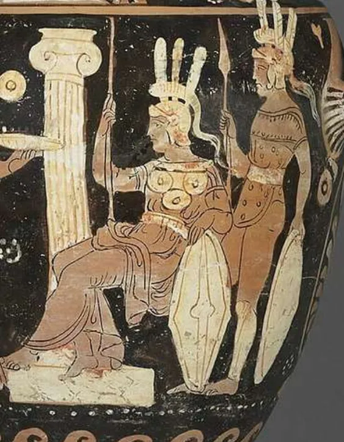
You can see here we have found the representation of Samnite pottery depicting a Samnite soldier with a helmet that has three plumes. This work was created in 3rd-4th Century BCE, Capua, now residing in the Louvre Museum, Department of Greek, Etruscan and Roman Antiquities. Campana, Giampietro, marquis di Cavelli.
Now naturally there is other evidence from archaeology such as spear heads, helmets and armour to consider too, although we won’t get bogged down in an exhaustive list of everything a unit uses here. Needless to say, we now have some form of historical and/or archaeological evidence to give our unit a solid foundation to build upon.
2. Check primary, secondary and tertiary sources. Luckily for us, compared to our previous design and description cycle with the Illyrians, Latin and Italic cultures have plentiful sources. My first call is to the primary sources to see if there are any significant events, battles or even snippets of information that might give flavour or further evidence to a description. In this case I am drawing elements from Livy and Strabo, for now I just take a whole section to see the information in its context, so I can later select appropriate elements to add colour to a description.
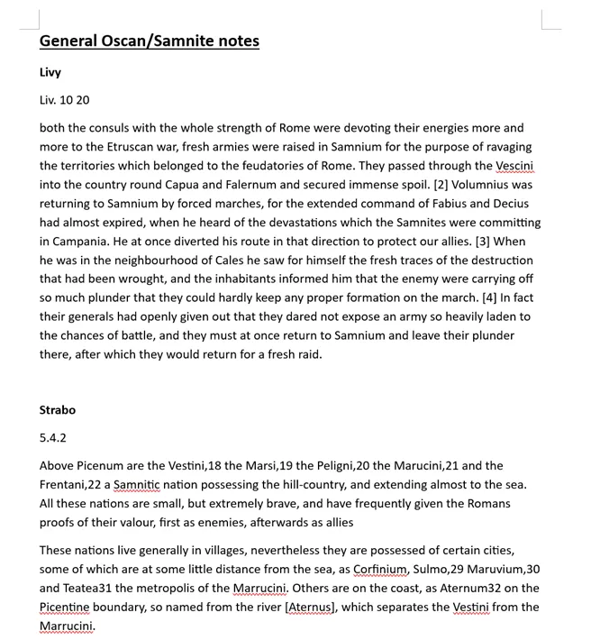
Primary sources alone are often prone to many issues including bias, incompetence and plain inaccuracy as they are often written by people who lived long as the events they describe and are using sources we may or may not have access to anymore. So, it is often handy to have some expert opinions and academic discourse on the matter, which is where secondary and sometimes tertiary sources come in. We normally use journal articles and academic books or websites to consult from, no popular history as it often lacks sources. I am normally reading between 3-4 sources at a time and taking notes on them, for example I am working my way through Samnium and the Samnites whilst commuting to and from work; The Cambridge Ancient History, Volume 7 Part 2 - The Rise of Rome to 220 BC in my free time; The Italic People of Ancient Apulia when on my computer while writing other descriptions. There are so many sources and all of them can reveal new and valuable information!
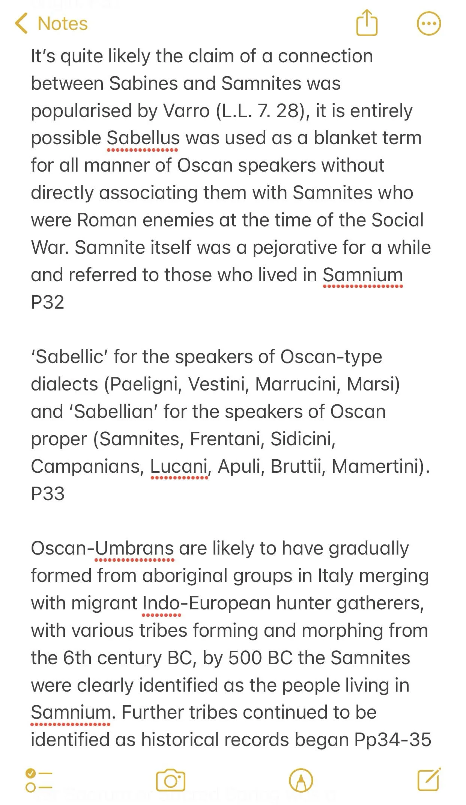
As you can see here, I've been doing notes on my phone where my PC isn't available.
3. Assembling the information and writing Writing is a fluid process, sometimes I will dip back into reading sources or even checking the historical evidence whilst writing a description, so perhaps it is better to think of this as part of a cycle rather than a rigid order.
Now I will look at the information I have on the subject and start to think what is the evidence wants me to tell. We often have a few unit descriptions to do per sub-faction, with the Oscans being a ‘meta-culture’ with strands like Samnites and Umbrians branching off, so it is good to think about how you will spread the information so each description has something new and useful without being overwhelming.
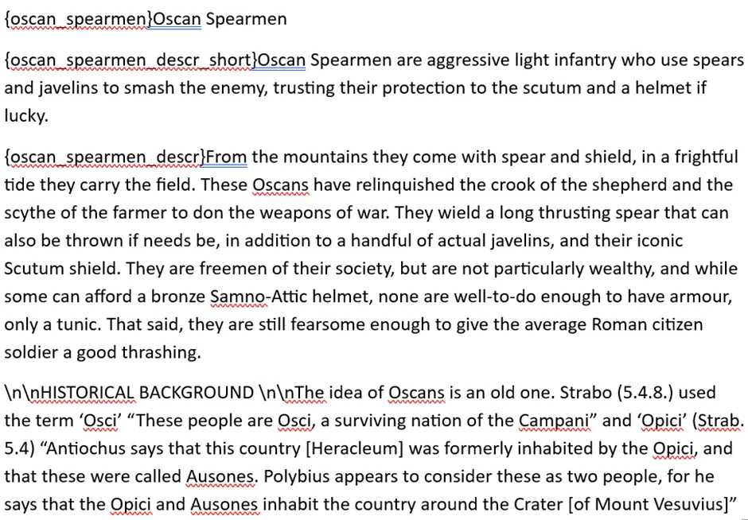
Once analysis of the sources and planning the paper are mostly finished, only then do I start to write. A unit description comes requires three things, a name, a short description and the detailed description. The name is usually settled so does not need changing. The short description is what you see when you mouse over a unit card in-game or on the custom battle screen, which means the player just needs a quick sentence or two to know what the unit does. The detailed unit description follows a now established order of first describing the unit itself briefly, normally without much source information, just so a player can find out what it does. The second part is our HISTORICAL BACKGROUND™ section. It is in this area that we explain the history/culture/society of the unit’s faction, discuss all the various arguments for/against the unit if needs be, and then finish with the evidence we used to justify arming and equipping the unit the way we did. At all stages we must critically think about what we are writing and prove it with source information, so every remastered unit description is a small academic quality essay.
4. Passing the Germano-Dutch watchmen The final step is editing and approval. We are extremely fortunate to have on our team many avid history enthusiasts alongside working academics. Your description is not finished until the history department picks at it and examines everything from grammar, to verifying claims and source information. Only then can it be approved and added to the next build of the mod, after which at some point, a few blessed players may open it and read it. Each description is the labour of many hours, I personally wrote more papers this summer for the mod than I did during a whole year at university, all of this so we can teach others and hopefully inspire another generation of history lovers, or even better, Rome modders.
And there we have it, the unit creation process from start to end. Watch out for the next Dev diary installments we'll be sharing this week.
This concludes our Developer Diary for today! (Start here: https://discord.com/channels/714205632663912498/894286297802362931/1572278717085126746) Discuss your thoughts and questions in https://discord.com/channels/714205632663912498/894286467747172382 and see you next time!